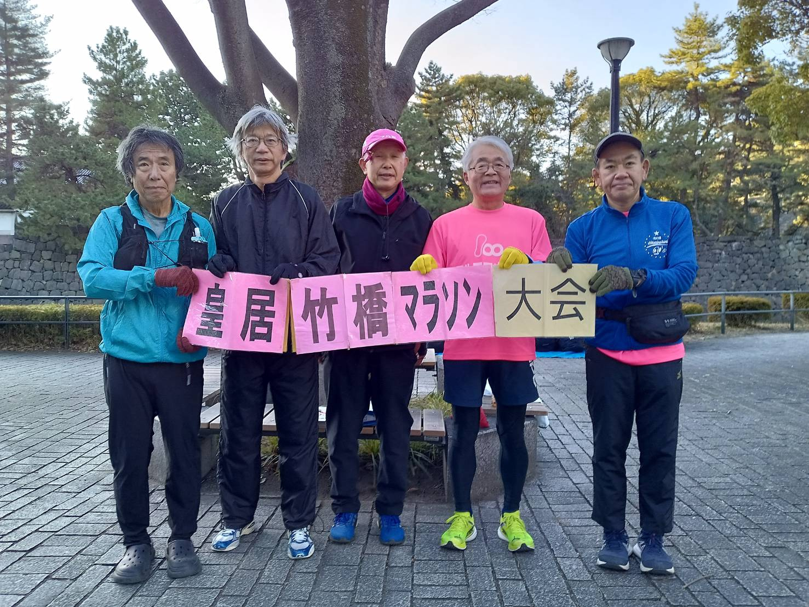

2026-01-10 17:29:19
2026年(令和8年）1月10日（土）晴れ2～14℃
| No | 会番 | 氏名 | 種目 | タイム |
|---|---|---|---|---|
| 1 | 182 | 堀池 計年 | フル | 3:57:59 |
| 2 | 119 | 山口 義治 | フル | 4:59:09 |
| 3 | 129 | 中家 和宏 | フル | 5:24:59 |
| 4 | 258 | 池尻 彰 | フル | 5:41:47 |
| 5 | 094 | 青木 建也 | フル | 5:45:27 |
| 6 | 139 | 島田 八十美 | フル | 6:51:47 |
| 7 | 066 | 大野 清美 | フル | 8:36:48 |
| 8 | 166 | 山口 真澄 | 20km | 3:50:10 |
| 9 | 013 | 住川 万里子 | 15km | 3:03:00 |
| 10 | 105 | 宮野 繁 | 12km | 2:43:22 |
マラソン終了後参加者全員で新年会を開催。
